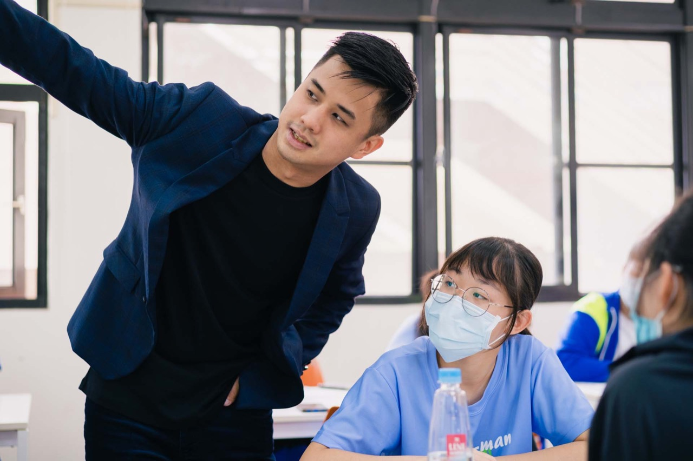
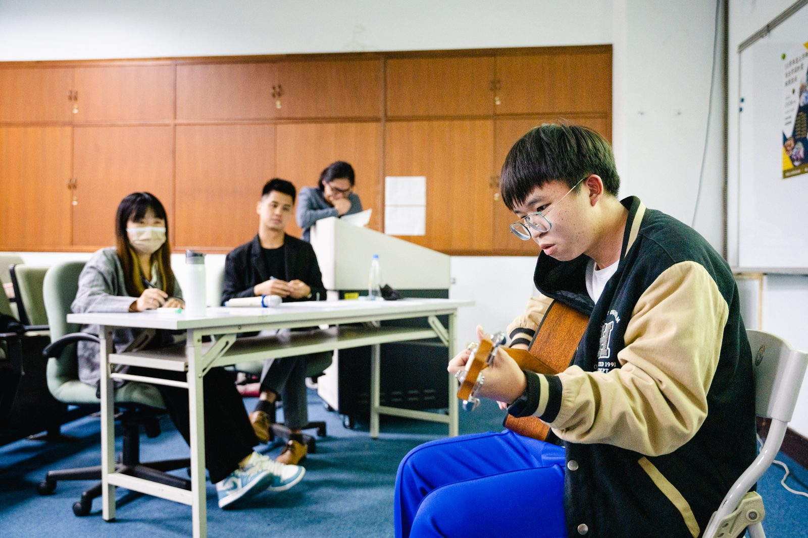
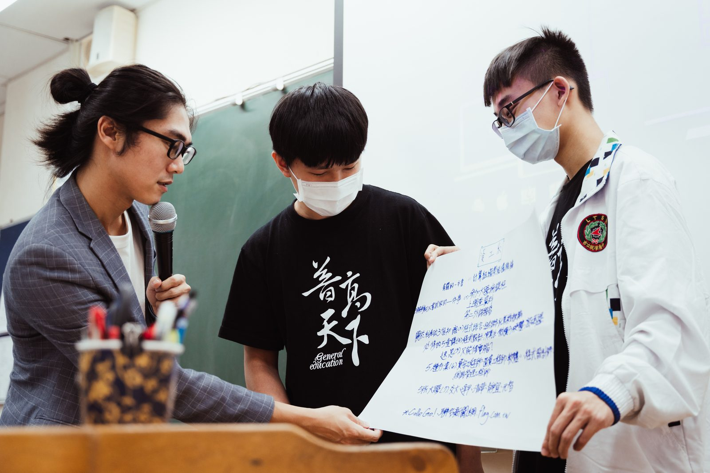
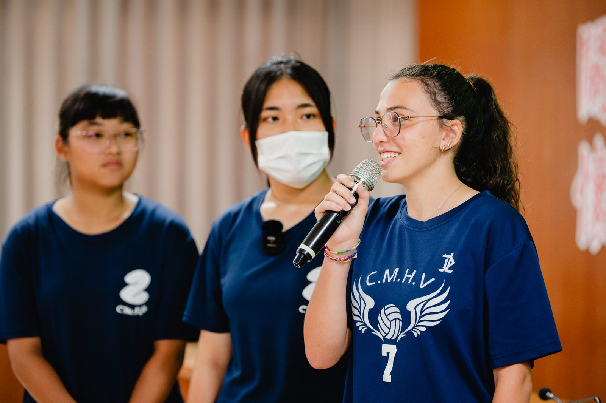
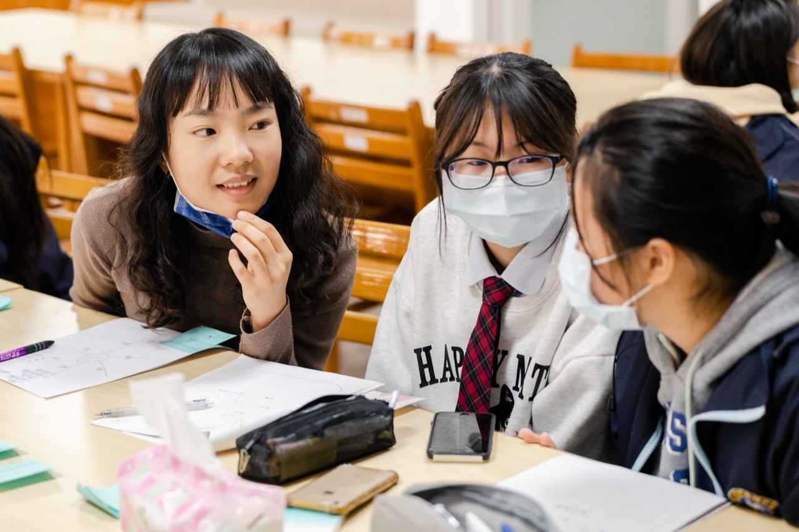
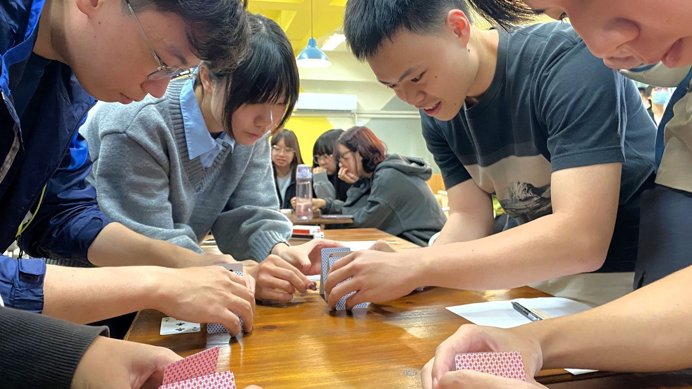

2016
開始關注台灣各地教育資源落差，思考如何透過教育陪伴，讓不同背景的青年都能擁有探索自我與發展潛能的機會，成為鄉育理念的起點。

About the Foundation
緣起 Origin
自 2021 年以來，鄉育團隊走入台灣北中南地區的高中與大專院校，辦理上百場學習歷程講座、工作坊與 16 週課程實作，培養青年探索未來的能力，累積了大量第一線教育經驗。
在培育學生的過程，我們逐漸發現，真正影響青年未來的，往往不是單一次考試成績或背誦更多知識，而在如何理解接收到的資訊、判斷情境，進而做出適合自己的選擇。
從高中偏鄉探索教育、大專院校人才培育、企業合作與真實場域學習，鄉育希望建立的不只是課程，而是一條條從校園走向真實世界的成長路徑。
發展歷程 Milestones
2016
開始關注台灣各地教育資源落差，思考如何透過教育陪伴，讓不同背景的青年都能擁有探索自我與發展潛能的機會，成為鄉育理念的起點。

2020
實際走入全台各地，訪談超過百位青年與學生，理解地方教育現況、學生需求與升學焦慮，逐步形成鄉育希望打造的新教育模式，也確立以青年探索與人才培育作為長期使命。

2021
配合 108 課綱推動，在台南北門高中與北門農工舉辦首次學習歷程檔案工作坊，協助學生理解自主學習、多元表現與未來探索，開啟鄉育第一線校園服務。

2022
正式成立財團法人鄉育教育基金會，並舉辦成立記者會，承接原有教育公益計畫，持續投入地方高中人才培育。當年度累積服務全台超過十所高中、數百位學生，也獲得企業與社會各界支持，共同推動教育公益。

2023
服務範圍擴展至雙北、桃園、新竹、台中、嘉義、台南、高雄、花蓮、金門等地方高中，邀請跨領域講者、創作者、企業家、教育工作者與內容創作者共同走入校園，主題涵蓋 AI 應用、自媒體、人生設計、黃金圈思考、運動員職涯、多元探索等，幫助學生接觸更多真實世界的可能性。

2024
首次與國立成功大學合作，培訓大專院校學生擔任高中引導員，讓青年陪伴青年，建立跨世代的學習支持網絡。並持續與各界企業及專業人士合作，讓教育內容更貼近真實職場與未來社會。

2025
服務正式延伸至大專校院，與高雄師範大學合作開設 16 週職涯探索選修課程，結合企業合作、決策思維、自我探索與真實專案，引導學生提前建立職場所需的能力。
同年完成勸募字號申請，讓更多社會大眾能透過小額捐款支持青年教育。

2026
・與青澀芷蘭協會合作，完成線上職涯探索課程，協助經濟弱勢青年探索能力與未來方向。
・同時分別於國立成功大學及高雄師範大學完成 16 週職涯探索課程，持續深化以決策能力、問題解決、自我理解與企業實作為核心的青年培育模式。
・與國立成功大學教育研究所合作，展開教育研究計畫，透過學術研究驗證青年提前培養職涯能力、自我決策能力與社會情緒能力，對未來職涯發展與身心健康所帶來的長期影響，逐步建立可持續推廣的青年教育模式。


組織架構 Governance
基金會以董事會為最高治理單位，向下由董事長、執行長與副執行長帶領，日常營運則由營運、業務與專案督導三個職位分工推動。
依教學、課程設計與教育研究三個功能分組；成員名單持續更新。
Teaching
企業高階主管、教育工作者與跨領域專家共同授課
Curriculum Design
整合 Decision Design、SEL 與企業實務為可落地課程
Research
與大學研究團隊合作，持續驗證教育成效
合作夥伴 Partners
與更多學校、企業，共同支持青年成長
合作學校與組織


合作企業


年度報告與公開徵信，完整記錄我們的成果與財務運用。